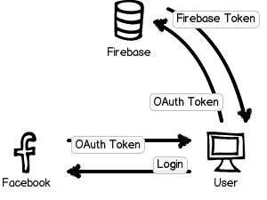

An open source Twitter clone built with Firebase.
Overview
Firefeed is an application modeled after Twitter. You can post 141 character messages, follow other users, and view messages as soon as they are posted.
So what's special about Firefeed?
- It's an entirely client side app.
No server logic or servers are needed. Any place that can host static content, for example Github Pages or Site44, will be able to run this app by simply serving the requisite HTML, CSS and JS files. You can easily serve it from a CDN, since there's no dynamic content or caching to worry about! - The core logic is less than 500 lines of code.
Excluding the user interface, all the application logic is in two files: firefeed.js and rules.json. The former contains a thin abstraction over the data stored in Firebase, and the latter is a small JSON file containing all the security rules that Firefeed must adhere by.
Firefeed is made possible by Firebase, a scalable real-time backend with a simple JS API. All Firefeed messages are stored there, and the API is used to update every user's feed with the latest messages in realtime. Firebase also has a rules language, that allows the developer to enforce certain security requirements.
Sound interesting? Let's delve into the details. We'll assume you know a little about Firebase and how data is stored in it. Be sure to read through the basic documentation for Firebase if you haven't already, or take the quick 5-minute tutorial!
Authentication
The very first step the user must perform in order to post a message on the site is to login. We use Facebook to authenticate the user, which looks something like this: 
We first obtain a Facebook OAuth token for the current user after they log in using the Facebook SDK, and then exchange it for a token from Firebase. When we configured our Firebase, we entered our Facebook application ID and secret. Thus, Firebase can be assured that the token could only have been produced by Firefeed, the app that the user agreed to log into.
Firebase can take care of this whole process for us, so we'll simply import the authentication library and make a couple of function calls:
var firebase = new Firebase("https://firefeed.firebaseio.com/");
// monitor state changes and react to updates
var authClient = new FirebaseSimpleLogin(chatRef, function(error, user) {
if (error) {
// an error occurred while attempting login
console.log(error);
} else if (user) {
// user authenticated with Firebase
console.log('User ID: ' + user.id + ', Provider: ' + user.provider);
} else {
// user is logged out
}
});
// perform the login (to Facebook in this case)
authClient.login('facebook');That's it! We now have a Firebase token for the user who just logged in and authenticated our Firebase reference with it.
Security
Now we’ve implemented authentication, we'll specify some rules about how the data must be handled by Firebase. This is how we ensure our client-only app is secure.
Before we dive into the rules themselves, it's important to note that the rules are tightly coupled to the data structure of your app. That's why we're doing the rules first, before we've decided how to structure our data. Since all the rules are in one place, it's much easier to think and reason about your data!
Characteristics
Let's list out the basic characteristics that we want Firefeed to have (we'll call every message in our system a spark):
- All sparks are readable by anyone, even users who aren't logged in. Sparks cannot be posted without logging in.
- All sparks are non-mutable, so they cannot be modified, even by the user that created them once they've been posted.
- Every user has their own list of sparks posted, and nobody should be able to add to this list but the user.
- Every user has their own feed, which is a combined list of all sparks posted by them, and by all the users that they are following. No other sparks must appear in this feed.
- Every spark post should be attributed to the currently logged in user, and users should not be able to spoof one another.
Let's translate these requirements into a set of rules! We'll have three top-level keys:
people: A list of registered users.users: A dictionary containing a key for every user which will contain their personal data (spark list and feed).sparks: A global list of sparks posted on the site along with their metadata.
The Rules
Let's start off with top-level rules. Anyone can read everything, nobody can write to everything:
{
rules: {
".read": true,
".write": false
}
}
The people key contains the list of registered users,
and we must ensure that a user should only be able to add their
own entry. We'll also let them modify the entry if they wish,
because we'll store some metadata about the user (such as the
profile picture URL) here. Remember the authentication token
we obtained earlier? The token also contains the user ID of the
user to whom the token was issued, which we will refer to in our
rules as auth.id:
{
people: {
$userid: {
".write": $userid == auth.id
}
}
}
The variable $userid refers to the key under people
for which the rule is evaluated. The write rule enforces that only
the currently logged in user can write their own entry. Cool!
Now, every user should be able to write into their own personal data bucket. Let's have every user bucket contain three properties: (1) a list of sparks posted by them, (2) a list of users they follow, and (3) a list of users who follow them. If you're wondering why we chose this particular structure, hold that thought, we'll come back to it in a minute!
{
users: {
$userid: {
".write": $userid == auth.id,
following: {},
followers: {},
feed: {}
}
}
}So far so good. The write rule above will evaluate to true for the currently logged in user, and they'll be able to write to their data bucket. But wait, wasn't the top-level write rule set to false? Yes, but Firebase will allow a write even if any one of the write rules in the path from a node to the root of the tree evaluates to true. Nifty!
We're not quite done yet, because even if the current user follows someone, their messages won't appear. We want to allow anyone who the user is following to be able to write to the current user's feed:
{
feed: {
"$sparkid": {
".write":
root.child('users/' + $userid + '/following').hasChild(auth.id) &&
root.child('sparks/' + $sparkid + '/author').val() == auth.id
}
}
}Let's break these rules down. They consist of two expressions that must both evaluate to true for the write to be allowed. They also make use of the special root variable which points to the top-level of our Firebase data.
The first rule specifies that only the people followed by a particular user are able to write to that user's feed. For example, if user A follows user B, user B can write to user A's feed. The second rule checks if the author of the spark being written is the same as the user who's trying to do the write. This means that user B can only write sparks authored by themselves into user A's feed.
Now let's make sure that every user in the following
list is a valid user, and that anyone is able to add themselves to
the follower list:
{
following: {
$userid: {
".validate": root.child('people').hasChild($userid)
}
},
followers: {
$userid: {
".write": $userid == auth.id
}
}
}We're almost there! We'll need to define the rules for the global sparks list. We need to ensure is that every spark is formatted a certain way, that sparks cannot be modified once posted, and that only the author of a spark is able to add it to the global list:
{
sparks: {
$sparkid: {
".write": !data.exists(),
".validate": newData.hasChildren(['author', 'content']),
author: {
".validate": newData.val() == auth.id
},
content: {
".validate": newData.isString()
}
}
}
}Easy! We made use of two new variables: data refers
to the object currently present at that location, and newData
refers to the data that will be written if the rule succeeds.
Phew - we're done with the rules! The hardest part is behind us now, when it's all put together, it makes a small 60 line JSON file. Now Firebase will ensure that no data will be written where it wasn't meant to.
Application Logic
Let's come back to why we decided on this data structure: A users feed and a user’s sparks will just be a list of spark IDs. The actual spark data will be stored in a global spark list. When a new spark is posted, we’ll it in the global list, and then put its ID in the feed of every user that is following the author.
var userid = info.id; // info is from the login() call earlier.
var sparkRef = firebase.child("sparks").push();
var sparkRefId = sparkRef.name();
// Add spark to global list.
sparkRef.set(spark);
// Add spark ID to user's list of posted sparks.
var currentUser = firebase.child("users").child(userid);
currentUser.child("sparks").child(sparkRefId).set(true);
// Add spark ID to the feed of everyone following this user.
currentUser.child("followers").once("value", function(list) {
list.forEach(function(follower) {
var childRef = firebase.child("users").child(follower.name());
childRef.child("feed").child(sparkRefId).set(true);
});
});
Why this structure? We're optimizing for performance and scalability. When we need to display the feed for a particular user, we only need to look in a single place:
var feed = firebase.child("users").child(userid).child("feed");
feed.on("child_added", function(snapshot) {
var sparkID = snapshot.name();
var sparkRef = firebase.child("sparks").child(sparkID);
sparkRef.on("value", function(spark) {
// Render the spark into the user's feed.
});
});With Firebase queries and limits, we can also limit the output to the latest 100 sparks so we don't fetch any more data than is needed, further improving our performance.
Exercises for the reader
This is just the foundation for a Twitter-like system. There are many features one can add to customize the experience. Here are some ideas to get you started!
- Implement unfollowing a user.
- Implement protected accounts. If a user opts into a protected account, their sparks can only be viewed by people they approve.
- Implement search based on #hashtags. Hint: Instead of searching for the actual value through the global list of sparks, consider creating a new bucket for every hashtag when it is first used, and then populating it with spark references.
- Implement retweets, favorites and @ messages to other users. (Hint: You can put the @ messages in the correct place at creation time).
- Implement direct messages. (Hint: Use a mailbox style system between users, and setup your rules such that you can write to another user's mailbox but not read from it).
We did it!
That was the story of how you can build a Twitter clone in under 500 lines of well commented code with copious whitespace.
We're pretty excited about this novel approach to securing client side apps. When combined with Firebase's realtime data updates, the doors have been opened to a wide range of innovative applications. We can't wait to see what you'll come up with, and we're here to help!